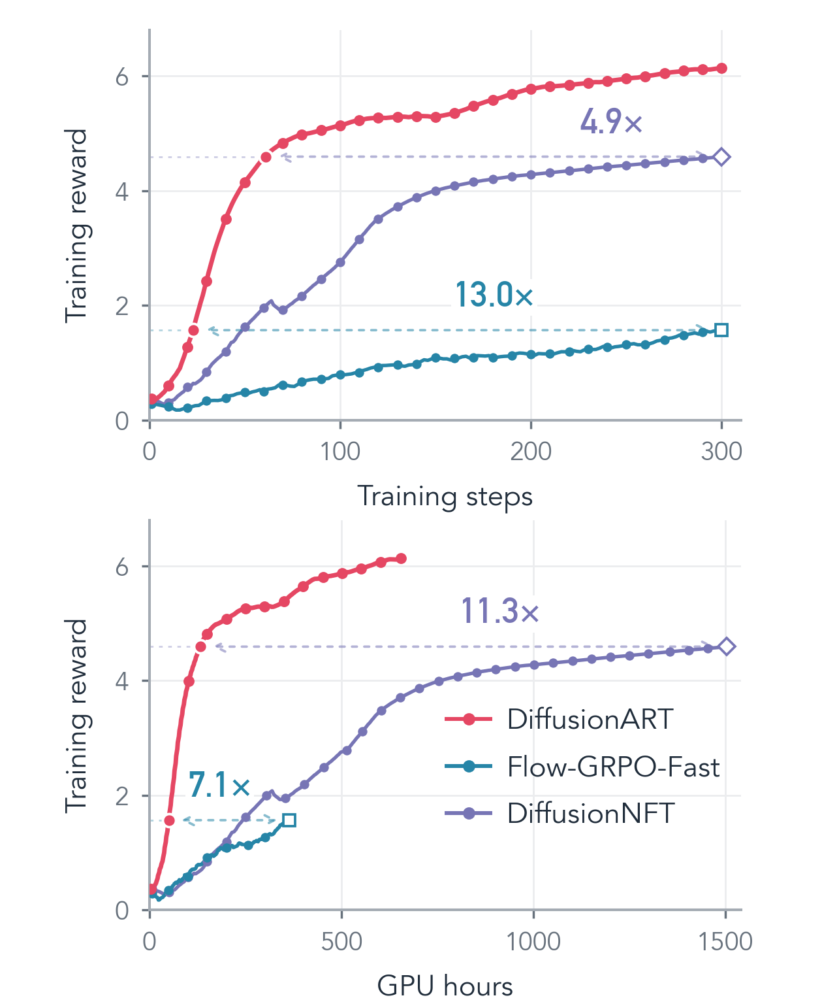
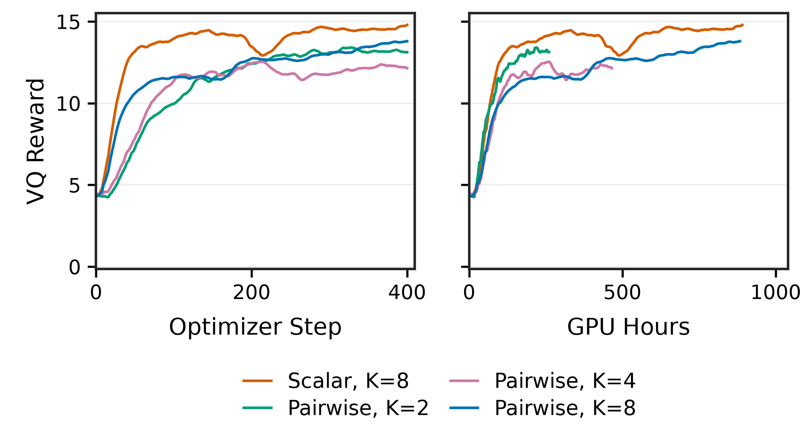
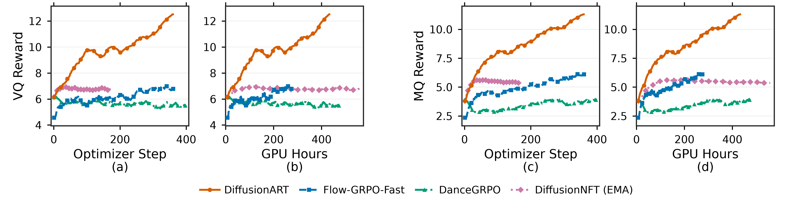

{kind=link}
{kind=link}
{kind=link}
The hidden instability
Practical NFT-style objectives contain a forward–reverse consistency force beyond the intended reward guidance. Its positive and negative contributions are not controlled at each state.
Efficient, Stable and Scalable
Reinforcement of Diffusion Model
How can diffusion models learn efficiently from rewards, without sacrificing stability? We identify a hidden forward–reverse consistency force in NFT-style training, and show why restoration toward the old policy stabilizes learning.
DiffusionART aggregates reward guidance before applying it. A single direction shared across each prompt's trajectories removes the unstable consistency force; frozen-target replay provides adaptive restoration. The same recipe supports scalar rewards and pairwise preferences across image and video generation.
Results
Images, videos, and pairwise preferences.
One aggregation-first recipe.

On HunyuanVideo-13B, DiffusionART reaches each baseline's 300-step reward level much earlier.
| Compared with | Steps | GPU hours |
|---|---|---|
| DiffusionNFT | 4.9× | 11.3× |
| Flow-GRPO-Fast | 13.0× | 7.1× |
VQ:MQ = 1:1 for all three methods. Thresholds use the same eight-update causal EMA. Elapsed GPU hours include evaluation, checkpointing and waiting.
Curve data (.csv)With just two videos per prompt, pairwise DiffusionART reaches VQ 12.5 in 2.8× fewer GPU hours than K = 8. Training uses binary preferences, not reward magnitudes.

On distilled Wan2.1-I2V-14B, DiffusionART reaches MQ 6 with 5.6× fewer GPU hours than Flow-GRPO-Fast.

Method
Diffusion Reinforcement with
Aggregation-First Reward Tilting
Practical NFT-style objectives contain a forward–reverse consistency force beyond the intended reward guidance. Its positive and negative contributions are not controlled at each state.
A lagged policy provides an anchor. Restoration toward that anchor is central to the stabilizing effect of off-policy training.
Aggregate endpoint rewards into a shared direction before updating. Frozen-target replay then supplies adaptive restoration as the policy moves.
Generate K endpoints per prompt and collect scalar rewards or pairwise feedback.
Compute reward–endpoint covariance, then normalize once, after aggregation.
G(c) = normalize(Cov(R, x0 | c))
Use two disjoint minibatches. The second MSE update adds restoration relative to the old policy.
Reward guidance + adaptive restoration
Generations
Same prompt.
A different generation.
Selected evaluation examples. Video pairs share prompts, seeds and sampling settings. Media provenance
Code release
Training code, configurations and reproducibility instructions are being prepared for release.